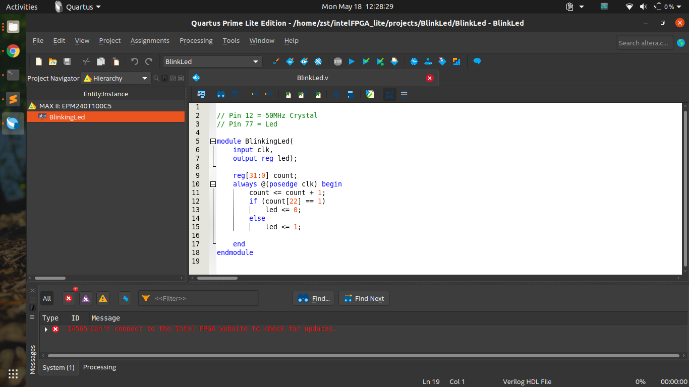

Chinese Altera Max II CPLDs - Hello World in Ubuntu
Tue 19 May 2020
Introduction
About a year ago, I bought some cheap Altera MAX II CPLD boards from eBay. I remember it was pretty cheap, about USD10 with free shipping for both the board and programmer.
However, I never really got to it because of my busy schedule last year. Now with stay home measures in place due to the pandemic, I finally have time to start learning about CPLDs.
There are a few guides on how to program this CPLD board on Windows OS. Hence, in this post, I'll focus on going through with my Ubuntu setup.
Board
The board is quite simple. You will find an Altera Max II EPM240T100C5N with a 50MHz crystal and an LED. It is a tiny CPLD with only 240 logic elements.
| Pinout | |
|---|---|
| Pin 12 | 50MHz Crystal |
| Pin 77 | Red LED |
You can find the schematics online too
Getting Started on Ubuntu
Install Quartus Prime Lite
As of writing, the latest version of the IDE is Quartus Prime Lite Edition 19.1.
To keep things simple, I downloaded the Combined Files installer: Quartus-lite-19.1.0.670-linux.tar.
After extracting, run bash setup.sh in Terminal.
As the install files are huge, I decided to uncheck all other devices except for the Max II series.
Starting Quartus Prime Lite
Connect your USB Blaster. Check if it is detected with this command
dmesg | tail
Next, start the JTAG process with sudo. (If you do not give it root permissions, you will get a "Insufficient port permissions" error during programming).
sudo ~/intelFPGA_lite/19.1/quartus/bin/jtagconfig
Finally, start Quartus Prime Lite
~/intelFPGA_lite/19.1/quartus/bin/quartus &
You will see the start screen.
Hello World Project
Create a new project using New Project Wizard and then create a new Verilog HDL file.

This the Verilog code for blinking an LED.
// Pin 12 = clk (50MHz Crystal)
// Pin 77 = led (Red LED)
module BlinkingLed(
input clk,
output reg led);
reg[31:0] count;
always @(posedge clk) begin
count <= count + 1;
if (count[22] == 1)
led <= 0;
else
led <= 1;
end
endmodule
Make sure to assign the pins under Pin Planner too.
After which, click on Programmer > Auto detect > Start to program the board.
Launch Script & Dark Theme Workaround
I have been using a dark theme on my system. However, the Pin Planner is unusable with a dark theme. As seen below, the selection rows have a white text and a bright background.
The workaround is to launch the app with a white theme.
I decided to create a launch script to do everything for me.
# Settings
GTK_DATA_PREFIX=~/intelFPGA_lite/
TARGET_THEME_NAME="Yaru"
SYSTEM_THEME_NAME="$( gsettings get org.gnome.desktop.interface gtk-theme | sed -e "s/'//g" )"
# Custom Theming
if [ ! -d "$GTK_DATA_PREFIX/share/themes/$SYSTEM_THEME_NAME" ]
then
echo "Creating theme configutation"
# Make symlink of the target theme
mkdir -p "$GTK_DATA_PREFIX/share/themes/"
ln -s "/usr/share/themes/$TARGET_THEME_NAME" "$GTK_DATA_PREFIX/share/themes/$SYSTEM_THEME_NAME"
fi
# Connect to JTAG with root permissions
# https://stackoverflow.com/questions/18704913/unable-to-lock-chain-insufficient-port-permissions
sudo ~/intelFPGA_lite/19.1/quartus/bin/jtagconfig
# Launch Quartus with white theme
GTK_DATA_PREFIX=$GTK_DATA_PREFIX ~/intelFPGA_lite/19.1/quartus/bin/quartus &
Conclusion
That's all for now. HDL coding is pretty different from programming languages and I'm still getting the hang of it. I have tried out examples for seven segments and PWM generation. Unfortunately, that's all I can do for now until I can get more hardware to interface with.